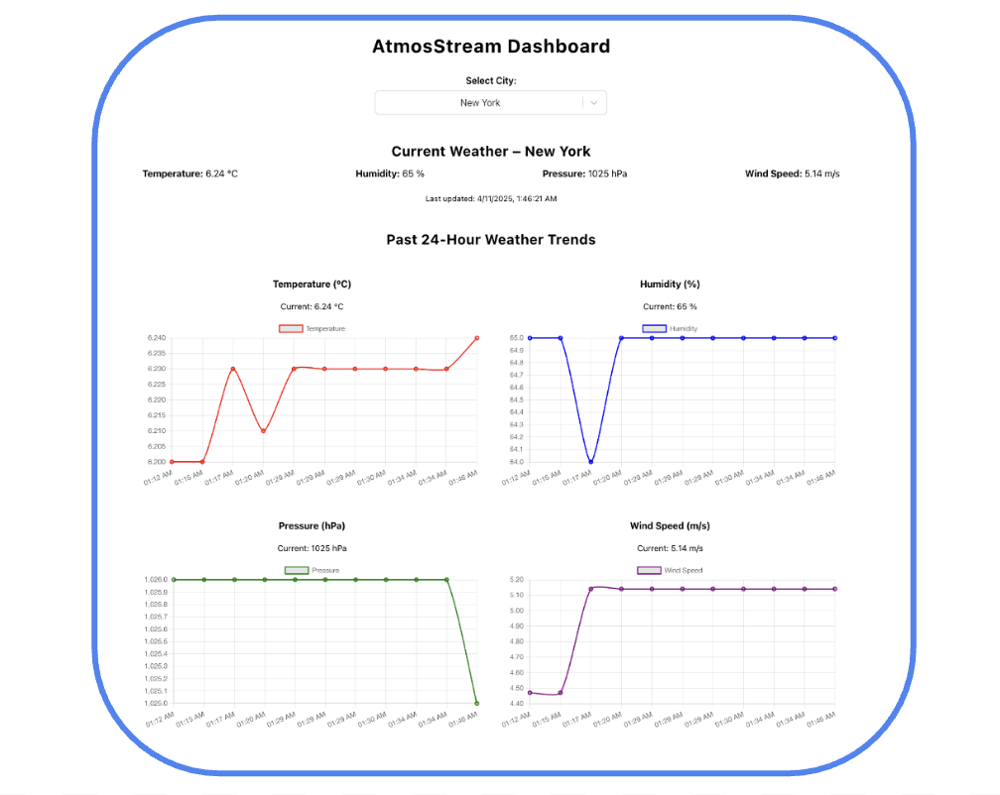
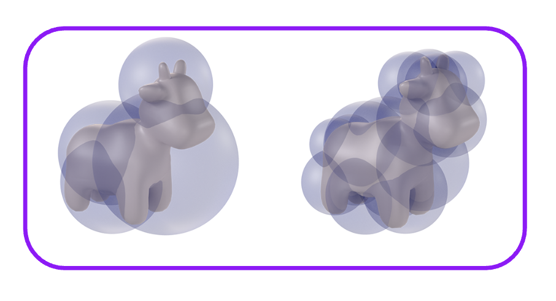

AtmosStream
AtmosStream is a full-stack real-time data platform that fetches and displays weather and air quality data for multiple cities. It uses a distributed data pipeline built with Apache Beam, stores results in PostgreSQL, serves data via a FastAPI backend, and visualizes it in a responsive React dashboard. Data is sourced from OpenWeatherMap and AirNow APIs.

Simulated Annealing for Improved Convolutional Nueral Network-based Crowded Object Detection
Designed a novel optimization framework that boosts CNN-based dense object detection using annealing-inspired heuristics for better convergence and accuracy.
First-author research for Harvard CS283 Advanced Computer Vision, in collaboration with Prof. Todd Zickler and Trace Baxley.

Real-Time Collision Detection for Physics-based Simulation
Engineered a reduced-deformation model for real-time collision detection, informed by physical constraints, for efficient simulation pipelines.
MIT CSAIL Summer Geometry Initiative project with Sara Samu, Juan Serratos, and Prof. Paul Kry.